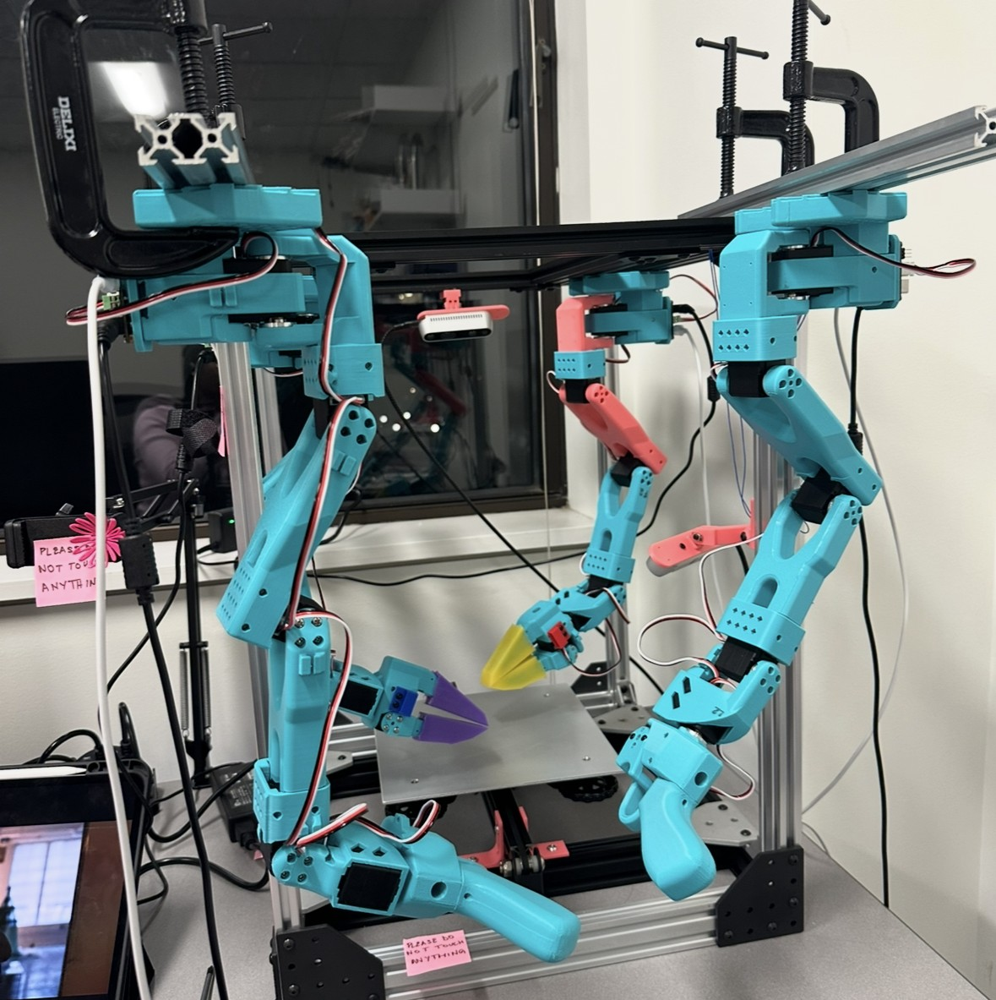
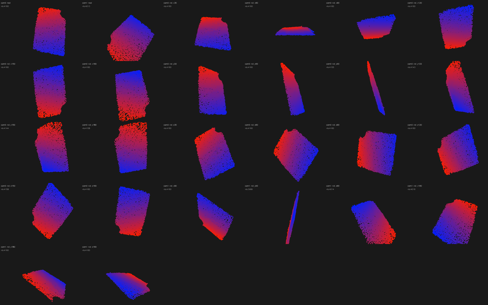
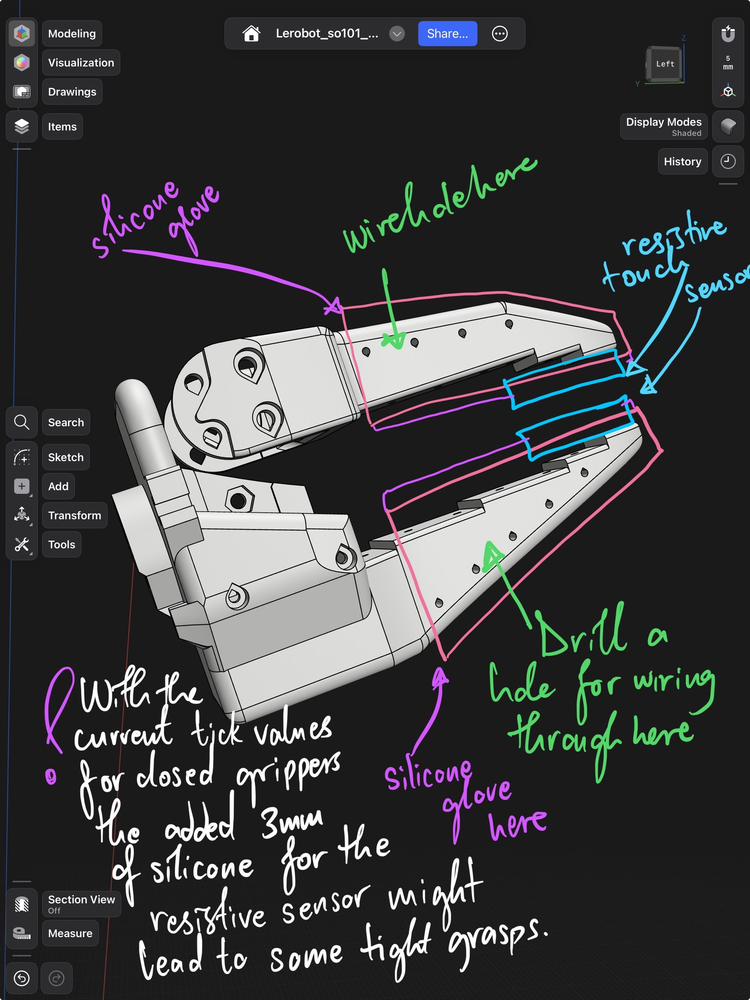
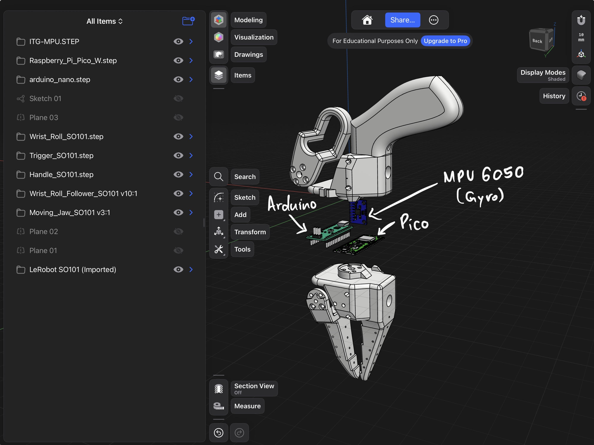
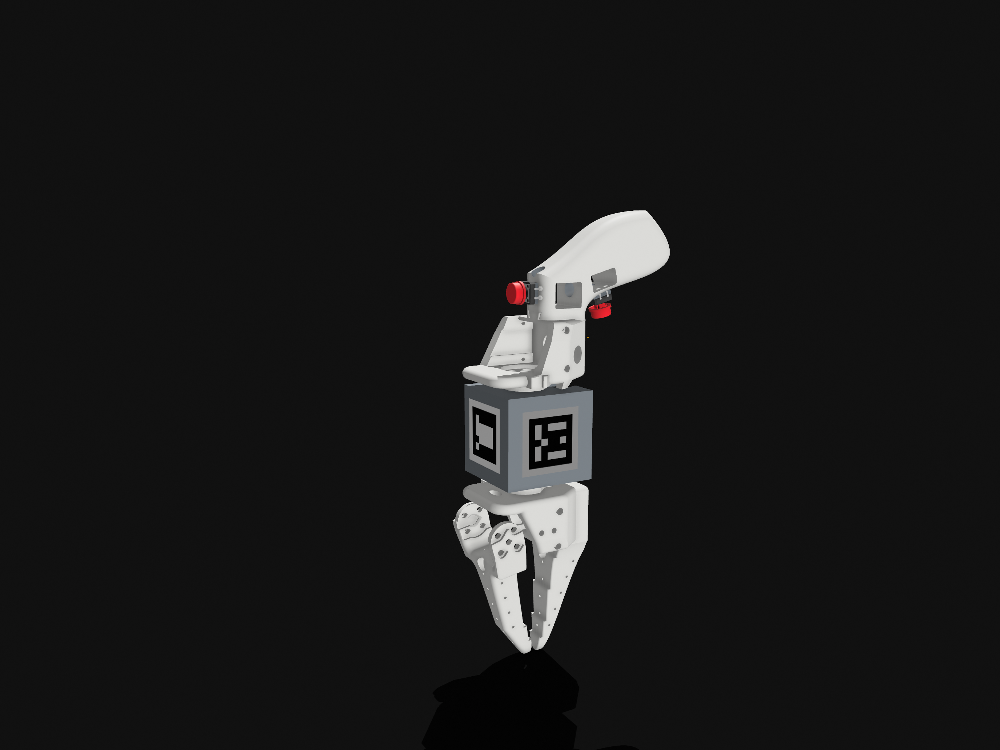

Building the full stack for reliable fabric handling on real robots: hardware, perception, teleoperation, and cloth dynamics learning.
Tabitha Oanda
Advised by Prof. Nora Ayanian · Robotics Group

CAD model spin
Real robot executing a recorded bimanual trajectory
Camera 0: real RGB · point cloud reconstruction · PhysTwin prediction

Multi-camera point cloud registration across trajectories
Baseline · 40 held-out episodes

Denim pinch with silicone FSR gripper
3D model spin — teleop gripper with ArUco box

Electronics: Arduino, Pico, MPU6050

Final design render